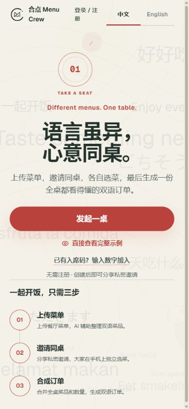

THE SAME TABLE, IN EVERY LANGUAGE.
菜单可以陌生。
一起点单，不用。
在国外餐厅，把看不懂的菜单、每个人的选择和一桌人的忌口，收拢成一张可以给餐厅看的双语订单。
体验点餐流程 ↓独立演示 · 无需登录 · 使用预设菜单，不调用 AI

FROM THE ACTUAL PRODUCT
它实际长什么样
下面是正式应用的真实截图。你可以切换查看首页、流程示例与最终订单。
TRY THE FLOW · INTERACTIVE DEMO
三个人，各自选。
一张单，一起看。
切换成员，调整每道菜的份数。右侧订单会把三个人的选择相加。此演示仅在当前页面运行，不创建在线房间。
BUILT FOR A REAL DINING MOMENT
把翻译、沟通和记录，
留给流程。
完整应用支持菜单图片识别、在线多人选菜、AI 点餐建议与人工确认订单。独立演示展示产品界面与汇总逻辑，适合放进个人作品集。
完整应用的网络可用性取决于访问地区与网络。